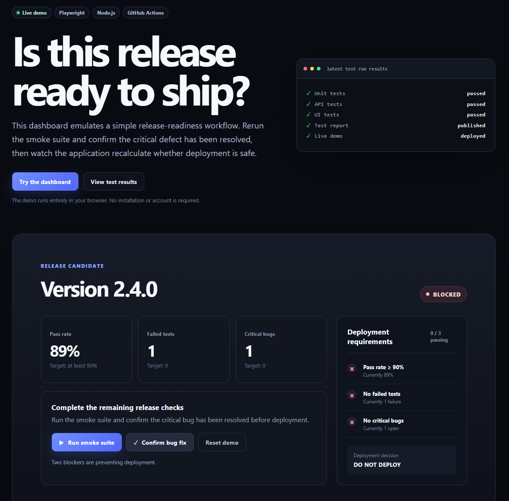
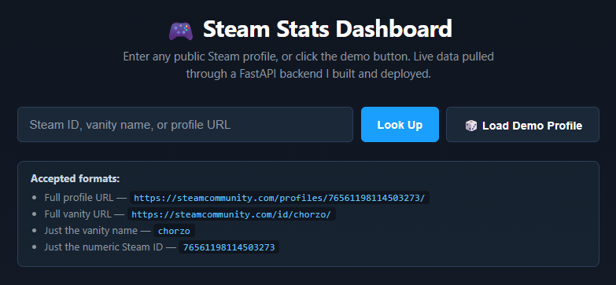

Dillon Olivi · Irvine, CA
Software Engineer,
Game Designer, SDET.
Welcome to my Portfolio, I build software, design player experiences, and build test frameworks for the systems behind them. Explore some of my work across engineering, game design, and SDET automation!
Portfolio highlights
Overview
Software · Games · Automation
Game Design / Lighting & AI
Crypt (In progress)
A dark Unreal Engine environment exploring lighting, mood, and AI that tracks down and grabs the player.
Explore Crypt ↗
Automation / CI/CD
Test automation suite
A QA automation portfolio project combining Selenium browser tests, HTTP-level checks with requests, and pytest in a GitHub Actions workflow.
Explore test automation suiteGame Design / Gameplay
Nanite Protocol
A first-person shooter built from scratch, including core FPS mechanics, health, and nanite pickup systems.
Explore Nanite Protocol ↗
Backend / API integration
Steam stats dashboard
A full-stack dashboard integrating the Steam Web API with a FastAPI backend on Render and a static frontend on GitHub Pages.
Explore steam stats dashboardProfessional experience
Blizzard Entertainment
October 2022 – July 2026 · Irvine, CA
For nearly four years at Blizzard, I worked at the with engineering, quality assurance, and design on two of the studio’s flagship franchises. I built and maintained automated regression suites in Selenium, Jenkins, and Lua that ran nightly across thousands of test cases, saving my team hours of manual work every day. I later moved into class design on Diablo IV, scripting abilities, items, and affixes in Lua, and built quests, items, and spells in WoWEdit for World of Warcraft Forever. Throughout my experience, I mentored QA staff across global vendor teams and partnered with engineers, designers, and producers to ship features that were both fun and stable.
Explore my experience ↗Contact Me
Get in touch!
For engineering, game design, or SDET opportunities, I’d love to hear from you.